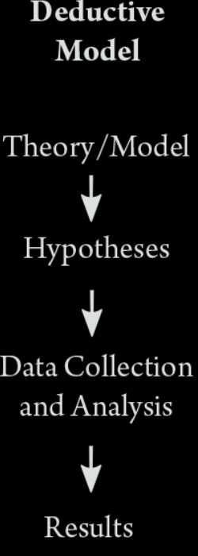
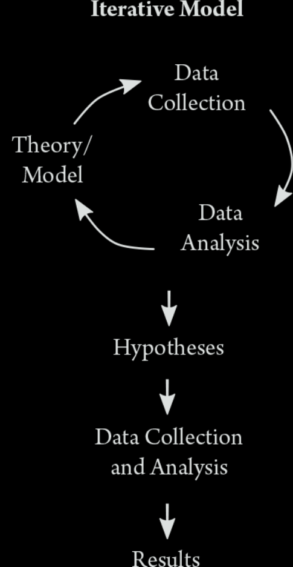
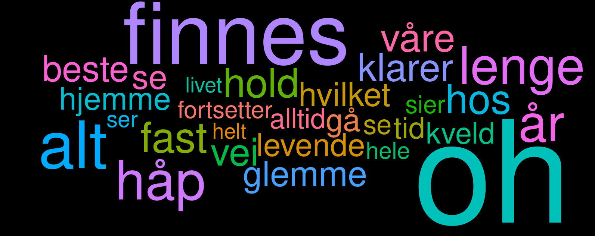
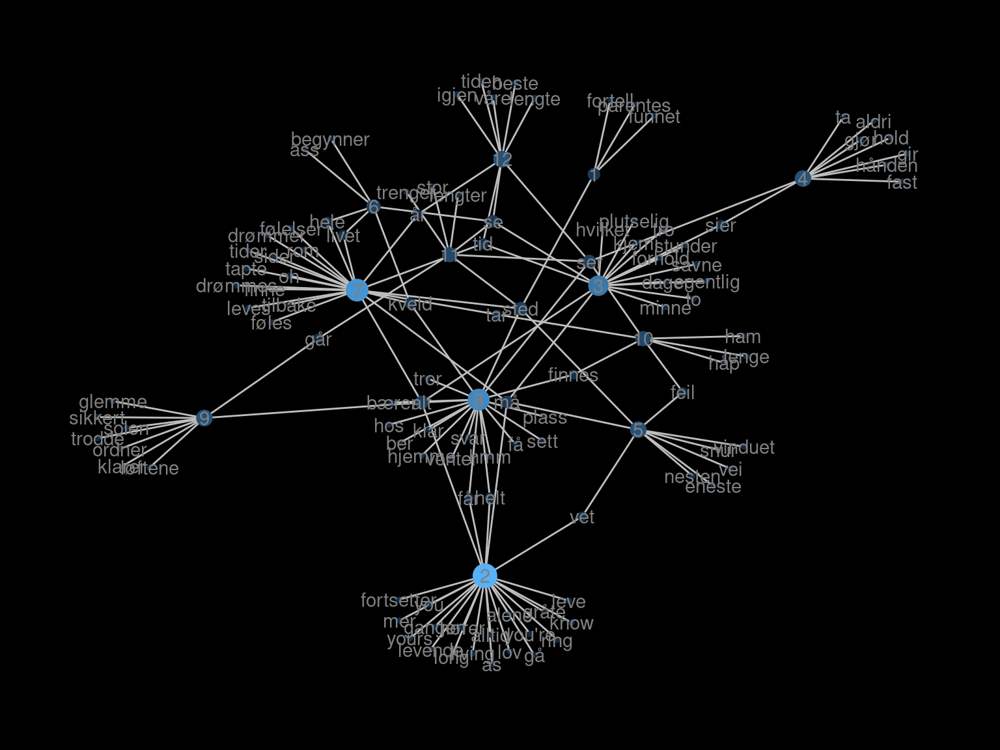
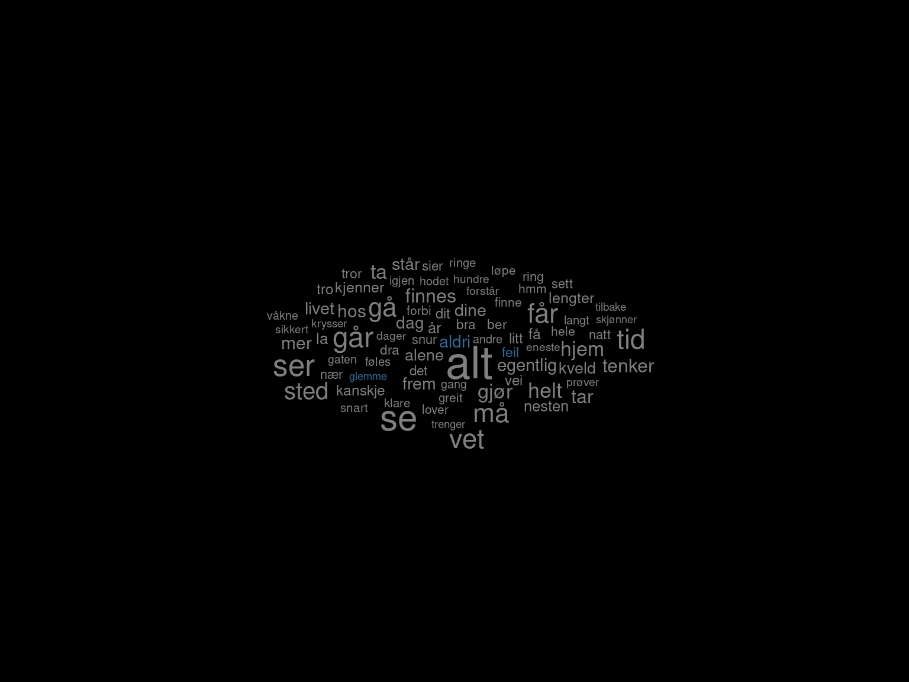
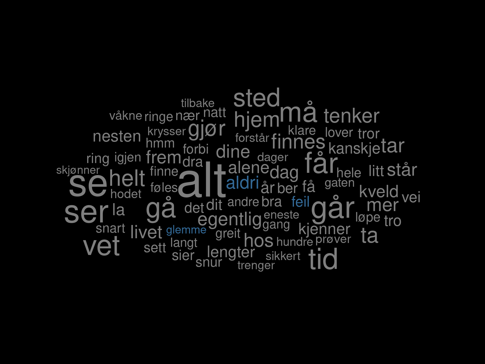
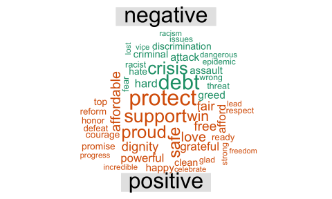
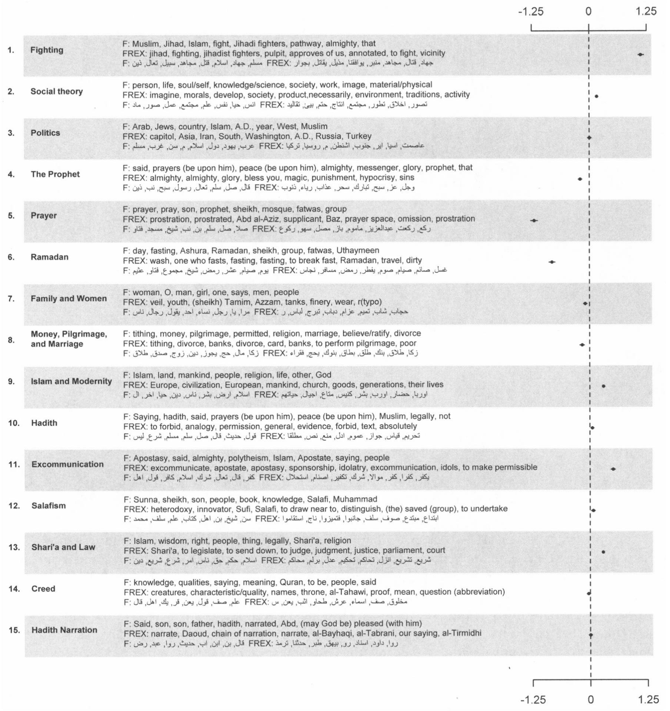
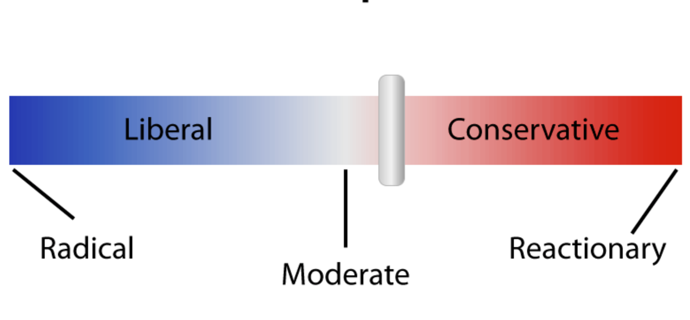

STV2022 – Store tekstdata
Introduksjon 
Solveig Bjørkholt | Martin Søyland <solveig.bjorkholt@stv.uio.no> | <martin.soyland@stv.uio.no>
Undervisning
Forelesninger
Intro! (uke 34)
Anskaffelse og innlasting av tekst (uke 35)
Forbehandling av tekst 1 (uke 36)
Forbehandling av tekst 2 (uke 37)
Bruke API (Stortinget) (uke 38)
Veiledet versus ikke-veiledet læring (uke 41)
Ordbøker, tekstlikhet og sentiment (uke 42)
Klassifisering av tekst – temamodellering (uke 43)
Estimere latent posisjon fra tekst (uke 44)
Oppsummering! (uke 46)
Seminarer
Hvordan gjøre…
- … scraping (uke 36)
- … preprosessering (uke 38)
- … visualisering (uke 43)
- … modellering (uke 44)
- … fra tekst til funn (Q&A) (uke 46)
Pensum
Grimmer J, Roberts ME, Stewart BM (2022). Text as Data: A New, Framework for Machine Learning and the Social Sciences. Princeton, University Press.
Grunnbok!
Silge J, Robinson D (2017). Text mining with R: A tidy approach., O’Reilly Media, Inc. <URL: https://www.tidytextmining.com/>.
Tidy tekstformat
Benoit K, Watanabe K, Nulty P, Obeng A, Wang H, Lauderdale B, Lowe W, (2017). quanteda: Quantitative Analysis of Textual Data. R package, version 0.9.9-65, <URL: http://quanteda.io>.
Tekstmodellering
+ En hau med artikler og mindre bidrag
Oppgaven
Prosessen
Grimmer, Roberts, and Stewart (2022, 15)


Enkelt eksempel
- Finne og hente data
- Alle tekster fra siste No. 4 album
- Stukturere data
- Fra rå tekst/.html til datasett
- Preprosessere data
- Ta valg!
- Visualisere data
- Hva viser data?
- Analysere data
- Kan vi gjøre slutninger?
Finne og hente data
# Laste inn pakker
library(rvest)
library(tidyverse)
# Url for alle sanger i albumet
url <- "https://genius.com/albums/No-4/No-4"
# "Skrape" nettsiden
raw_data <- read_html(url)
# Trekke ut titteltekster fra siden
titler <- raw_data %>%
html_elements("div.chart_row-content > a > h3") %>%
html_text() %>%
str_trim() %>%
str_remove_all("\\s+Lyrics")
# Trekke ut urlene til hver sang
track_urls <- sapply(raw_data %>%
html_elements("div.chart_row-content > a") %>%
html_attrs(),
"[[", 1)
# Strukturere tekstene til hver sang
text <- lapply(1:length(track_urls), function(x){
# Skrape url x
tmp <- read_html(track_urls[x])
# Trekke ut tekst og renske den
tmp2 <- tmp %>%
html_elements("div.Lyrics__Container-sc-1ynbvzw-6.jYfhrf") %>%
html_text2() %>%
str_split("\\n") %>%
unlist() %>%
str_c(collapse = " ") %>%
str_remove_all("\\[(.*?)\\]") %>%
str_replace_all("\\s+", " ") %>%
str_trim()
# Legge inn "soving" mellom x'er
Sys.sleep(2+rnorm(1, 3))
# Returnere resultatet
return(tmp2)
})
# Kombinere alt til et datasett
no4 <- tibble(spor = 1:length(titler),
titler,
tekst = unlist(text))
head(no4)## # A tibble: 12 x 3
## spor titler tekst
## <chr> <chr> <chr>
## 1 1 Parentes "Forstyrrer jeg, eller har du "
## 2 2 En av de levende "Sånne dager som den her Når a"
## 3 3 Hvilket vi "Har du tid til meg nå? Plutse"
## 4 4 Hold deg fast "Jeg gir meg, bare ta meg Du f"
## 5 5 Feil sted "Du bare dro Pakket bagen og s"
## 6 6 Regndanse i skinnjakke (Ft. F "I kveld er nå, og året, alt a"
## 7 7 Hele livet (Ft. Fredrik Høyer "Er tom for ord og ting å si N"
## 8 8 Hjemme hos meg "Hjemme hos meg (Hjemme hos me"
## 9 9 Alt vi ikke er "Når alle er våkne, når solen "
## 10 10 Så lenge vi finnes "Leter du etter hennes blikk i"
## 11 11 Du trenger ikke å bli stor "Jeg ser deg gå alene ut Se de"
## 12 12 Våre beste år "Greit, jeg skjønner tegninga "Fra tekst til tall
# Grunnpakke for tekstprosessering
library(tidytext)
no4_tokens <- no4 %>%
group_by(spor) %>%
unnest_tokens(output = ord,
input = tekst) %>%
count(ord)
no4_tokens %>% head(6)## # A tibble: 6 x 3
## # Groups: spor [1]
## spor ord n
## <int> <chr> <int>
## 1 1 at 5
## 2 1 bare 4
## 3 1 bra 1
## 4 1 der 1
## 5 1 det 4
## 6 1 dette 4## # A tibble: 12 x 3
## # Groups: spor [12]
## spor ord n
## <int> <chr> <int>
## 1 1 at 5
## 2 2 jeg 32
## 3 3 hvilket 11
## 4 4 du 15
## 5 5 du 27
## 6 6 i 9
## 7 7 oh 60
## 8 8 du 22
## 9 9 det 27
## 10 10 finnes 40
## 11 11 du 14
## 12 12 år 14Fra tekst til tall (uten stoppord)
# Grunnpakke for tekstprosessering
library(tidytext)
no4_tokens <- no4 %>%
group_by(spor) %>%
unnest_tokens(output = ord,
input = tekst) %>%
count(ord) %>%
filter(ord %in% quanteda::stopwords("no") == FALSE)
no4_tokens %>% head(6)## # A tibble: 6 x 3
## # Groups: spor [1]
## spor ord n
## <int> <chr> <int>
## 1 1 bra 1
## 2 1 forstyrrer 1
## 3 1 fortell 2
## 4 1 funnet 2
## 5 1 hmm 1
## 6 1 høre 1## # A tibble: 12 x 3
## # Groups: spor [12]
## spor ord n
## <int> <chr> <int>
## 1 1 fortell 2
## 2 2 levende 11
## 3 3 hvilket 11
## 4 4 fast 13
## 5 5 vei 10
## 6 6 ass 2
## 7 7 oh 60
## 8 8 hos 12
## 9 9 alt 21
## 10 10 finnes 40
## 11 11 stor 4
## 12 12 år 14Visualisere data
library(ggwordcloud)
no4_tokens %>%
filter(n > 4) %>%
ggplot(., aes(label = ord, size = n, color = colors()[1:29])) +
geom_text_wordcloud_area()+
scale_size_area(max_size = 50) +
ggdark::dark_theme_void()
Typer analyse
Hvem er kjent med:
Vi ønsker å bruke tekst for å si noe om mønstre og sammenhenger.
Det er spesielt tre steg i forskningsprosessen:
- Oppdagelse (discovery)
- Måling (measurement)
- Slutning (inference)
Deskriptiv
Deskriptiv analyse handler om å beskrive dataene.
For eksempel:
- Hvilket ord dukker oftest opp på platen?
## # A tibble: 405 x 2
## ord n
## <chr> <int>
## 1 alt 10
## 2 se 7
## 3 går 6
## 4 ser 6
## 5 får 5
## 6 gå 5
## 7 må 5
## 8 sted 5
## 9 tid 5
## 10 vet 5
## # ... with 395 more rowsDeskriptiv
Eller…
- Hvilke ord ble brukt mest over ulike tidsperioder?
- Hvordan fordeler ordbruken seg mellom ulike aktører?
- Hvilke ord deles mellom de ulike tekstene?
Deskriptiv
## Warning: package 'igraph' was built under R version 4.1.3
Veiledet vs. ikke veiledet læring
Læring: Maskinen bruker data til å forstå mønstre og sammenhenger selv.
- Står i kontrast til regelbaserte metoder (ingen læring, kun følge en oppskrift)
Tekst regnes gjerne som “stordata”, fordi hvert ord blir en variabel.
Stordata er godt tilpasset læringsalgoritmer.
Vi deler “læring” inn i to:
- Veiledet læring (det finnes en fasit alt)
- Ikke-veiledet læring (det finnes ingen fasit)
Veiledet vs. ikke veiledet læring
Veildet læring
Vi vet allerede
Y(avhengig variabel).Maskinen bruker data for å lære sammenhenger som den kan applisere på ny data.
Brukes spesielt for måling og slutning.
Kan vi bruke informasjon om disse objektene…
## # A tibble: 5 x 3
## frukt fasong farge
## <chr> <chr> <chr>
## 1 banan lang gul
## 2 banan lang gul
## 3 pære rund grønn
## 4 banan lang gul
## 5 pære lang grønnTil å finne ut om disse objektene er banan eller pære?
## # A tibble: 2 x 3
## frukt fasong farge
## <chr> <chr> <chr>
## 1 "" rund gul
## 2 "" lang grønnVeiledet vs. ikke veiledet læring
Ikke-veiledet læring
Vi vet ikke
Y(avhengig variabel).Maskinen bruker data for å lære om mønstre i data.
Brukes spesielt for oppdagelse og måling.
Vi kan bruke informasjon om disse objektene…
## # A tibble: 5 x 3
## fasong farge størrelse
## <chr> <chr> <chr>
## 1 lang gul middels
## 2 lang gul middels
## 3 rund grønn liten
## 4 lang gul middels
## 5 lang grønn storTil å si noe om hvordan objektene hører sammen?
## # A tibble: 5 x 4
## fasong farge størrelse type
## <chr> <chr> <chr> <dbl>
## 1 lang gul middels 1
## 2 lang gul middels 1
## 3 rund grønn liten 2
## 4 lang gul middels 1
## 5 lang grønn stor 2Ordbøker, tekstlikhet og sentiment
Ordbøker: Lag deg selv en ordbok over relevante ord, og sjekk hvor mange ganger disse ordene dukker opp i ulike tekster.
- Ordbøker er regelbaserte
trist <- tibble(ord = c("gråte", "savne", "våt", "tåre", "tårer", "stakkar", "stygt", "feil", "aldri", "natten", "glemme", "tapte"),
trist = c(1, 1, 1, 1, 1, 1, 1, 1, 1, 1, 1, 1))
no4_tokens %>%
ungroup() %>%
count(ord) %>%
left_join(trist) %>%
ggplot(., aes(label = ord,
size = n,
color = trist)) +
geom_text_wordcloud_area()+
scale_size_area(max_size = 10) +
ggdark::dark_theme_void()
Ordbøker, tekstlikhet og sentiment

Ordbøker, tekstlikhet og sentiment
Tekstlikhet: Ta to tekster og sammenlikn hvor like de er.
- Tekstlikhet kan regnes som ikke-veiledet læring.
no4 %>%
filter(spor %in% c(2, 4)) %>%
mutate(likhet = c(0.09630868, 0.09630868)) %>%
select(likhet, titler, tekst)## # A tibble: 2 x 3
## likhet titler tekst
## <dbl> <chr> <chr>
## 1 0.0963 En av de levende Sånne dager som den her Når alt er stygt og dårlig væ~
## 2 0.0963 Hold deg fast Jeg gir meg, bare ta meg Du får meg, du har meg For j~Ordbøker, tekstlikhet og sentiment
Sentiment: Finn ut hvor positiv, negativ eller nøytral en tekst er.
- Sentimentanalyse kan både gjøres gjennom ordbøker og gjennom veiledet læring.

Klassifisering av tekst
Klassifisering: Hva slags type tekst er dette?
- En kategorisk variabel som klassifiserer teksten.
- Kan både være veiledet og ikke-veiledet
no4 %>%
filter(spor == 1:4) %>%
mutate(type = c("glad", "trist", "trist", "glad")) %>%
select(spor, titler, type, tekst)## # A tibble: 4 x 4
## spor titler type tekst
## <int> <chr> <chr> <chr>
## 1 1 Parentes glad Forstyrrer jeg, eller har du tid til å høre på m~
## 2 2 En av de levende trist Sånne dager som den her Når alt er stygt og dårl~
## 3 3 Hvilket vi trist Har du tid til meg nå? Plutselig alt tid til meg~
## 4 4 Hold deg fast glad Jeg gir meg, bare ta meg Du får meg, du har meg ~Klassifisering av tekst
Eksempel fra temamodellering i pensum (Lucas 2015):

Estimere latent posisjon fra tekst
Latent posisjon: Hvor på en akse befinner denne teksten seg?
Latent: Ikke direkte observerbar.
Kan både være veiledet og ikke-veiledet.
For eksempel: Er et partiprogram på den politiske høyresiden eller venstresiden?
